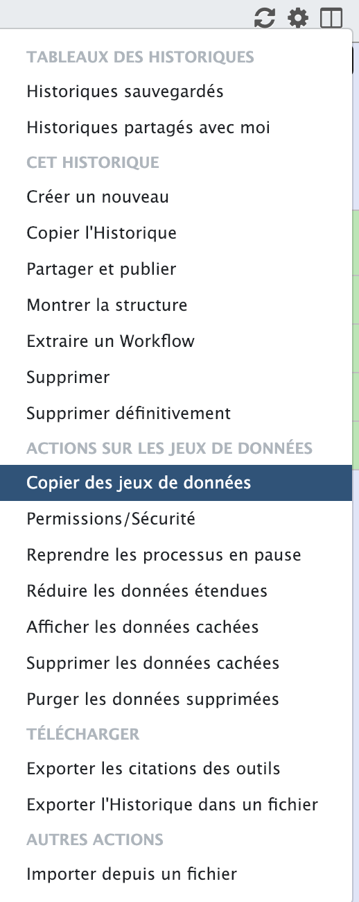

Prepare your input data history
- Rename your
Unnamed historytoInput Dataset and collections -
Go to menu
Shared Data-->Data Libraries(Données Partagées-->Bibliothèque de Données)
-
Choose
Mouse Geneticslibrary - Select the 4 fastq files (A_R1.fastq, A_R2.fastq, B_R1.fastq and B_R2.fastq)
-
Select the
To Historytab -->as datasets -
Select your freshly renamed
Input Dataset and collectionsin theselect historymenu - Click
Importbutton - After the import, navigate directly to this history by clicking the
green warning -
Prepare two
collectionsfrom your raw input datasets.-
Toggle the "checkbox" mode by clicking the small checkbox icon at the top of the history bar

-
Select the 2 A fastq files OR the 2 B fasq files (not all 4 files, choose as you feel it!)
-
Select
Build List of Dataset Pairsfrom the tabPour toute la sélection -
in the pop up window, replace
_1by_R1and_2by_R2 -
Click the
Pair these datasetstab -
Name your new "paired dataset" collection with a single element
A_fastq(orB_fastqif you chose the B fastq file at the previous step) and click onCreate list -
Back to your history, that is still in "checkbox" mode, select the 4 fastq files, and repeat the operation to produce this time a collection of 2 paired-sequences element, which you will name this time
patient sequences -
Time to start the analysis: Select the
Copy datasetsin the history "wheel" menu  -
Select the first collection with a single element (A or B) that you first prepared
- in the
destination historyarea, fill theNew history namedfield withSingle sequence dataset analysisand click theCopy History Itemsbutton - Click the link that shows up to navigate directely to this new history !
-